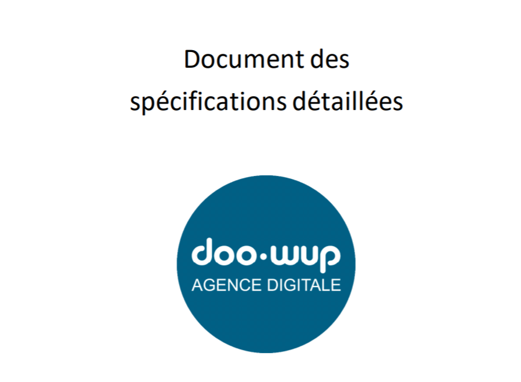

Afin de prendre connaissance du projet Neptune et d'en cerner les besoins, j'ai eu à ma disposition une documentation complète de la solution. Parmi les ressources, on y trouvait l'explication de l'architecture MVC, un schéma de l'arborescence des fichiers, le modèle de données ainsi que les spécifications fonctionnelles de chaque fonctionnalités.
Au cours de ce stage, des tutoriels ont été mis en place sur Discord par les membres du projet afin d'obtenir une aide plus complète au développement de la solution.
J'ai eu à ma disposition des maquettes réalisées avec soin par mon tuteur de stage. Ces différentes vues
concernant diverses pages de la gestion de tickets
étaient bénéfiques et très utiles pour savoir ce qui
était précisément attendu.
Maquettes visible ici
Un certain nombre de tâches m'étaient attribuées afin de répondre correctement aux besoins de la gestion de
tickets.
Chacune des tâches étaient divisées en trois grandes parties, chacune correspondant aux trois pages de la
fonctionnalité ticket.
Elles disposaient toutes d'une date butoir, d'un niveau de priorité plus ou moins
élevé et pour certaine, une description détaillée attendue de cette fonctionnalité.
Le diagramme de GANTT a permis d'évaluer le temps passé sur chaque fonctionnalitées.
Pour chaque changement d'état d'une fonctionnalité, une notification était envoyée sur le serveur Slack du projet Neptune afin d'informer mon tuteur de mon avancée.
Au départ, il y avait des tâches prédéfinies et nécessaires au développement de l’application. Au cours du
développement, il y a eu des évolutions à la demande du client (Doowup) qui se sont ajoutées et qui
n'étaient pas présentes sur la maquette.
Exemple de ces évolutions :
-> Création d'une barre de recherche pour l'accès à des tickets spécifiques.
-> Création d'une sélection sur l'état des tickets pour un accès ciblé.
-> Création d'une sélection par date de création d'un ticket.
-> Mise à jour et changement de l’arborescence des fichiers du projet et intégration
d’un routeur